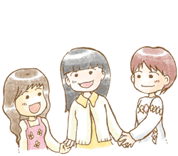

入門知恵袋４ 効果的にトレーニングをするために

さてさてここまで知恵袋を読んで
頂きありがとうございました！
これで入門知恵袋は最後になります。
私たちはまずコミュニケーション能力を考える際に
環境や目的を考えなくてはならないことをお伝えしました。
そしてもしその点が明確になったら、前向きに努力することも
幸せな人生を歩む上でとても大事なことだと思います。
現在では心の問題や人間関係を改善するための
トレーニング方法が確立されてきています。
自分に足りない何かを練習してできるようになることで、
世界が広がって、仕事の幅が広がったり、
恋愛がうまく行くようになることもたくさんあると思います。
１つ例を挙げましょう
コミュニケーション講座でもトレーニングしていますが
「言い換えのオウム返し」というスキルがあります。
言い換えのオウム返しは、
相手の発言を少し言葉を変えて
返す技術になります。
例えばAさんが
「横浜に買い物に行って、中華街でたくさん食べました！満腹です」
と話してくれたとします。
このとき、少し言葉を変えて、
そのまま返してあげるのですね。
「おなかいっぱい中華を食べられたんですね♪」
と返すのです。「そうなんですね～」と単純に返すのではなく、ある程度相手の話をもらって
言葉を変えながら返していくのです。そうすると会話の相手は
お話をちゃんと聞いてくれたんだなあ～ときっと感じてくれるはずです。
これは傾聴の基本スキルですが、意外とできていない方が多いのです。
皆さんは相手がお話してくれたら、
どのように返していますか？
もしどう返していいかわからない・・・
という方がいましたら、
まずは「言い換えのオウム返し」
を参考にしてみてくださいね。
せっかくなので練習してみましょう！！
せっかくなので1つ練習してみましょうか？？
なんだか知恵袋を書いていたら講義をしてしまいたくなってしまいました！
そうですね・・・例えば会話の相手が
「今度箱根に旅行に行くんだ。ちょっと奮発してわりと高級な宿をとっちゃった。
でもたまにだからね！温泉に入ってゆっくりするつもり！」
と言ってくれたとします。さて！この言葉を言い換えて
返すとどうなるでしょうか？ちょっと考えてみましょう！
考えましたか・・・？？2分ぐらい考えてみましょう
きっと考えていない方がいると思うので
もうちょっと待ちます・・・
さてさて、回答としてはこんな感じで
返せていればOKです♪参考にしてみてくださいね。
「贅沢な宿をとってまったりするんだね！」
「ときどきエイヤって！高い宿泊まるのも楽しいよね」
「グレードの高い宿だと時間を忘れてしまうぐらいリラックスできそうだなあ！」
このように相手の発言を適度に変えて同じ意味で
返せていれば自然な会話になります。
このようにコミュニケーションをする上では
ちょっとしたコツで円滑な人間関係を
築くことができる技術がたくさんあるのです。
皆さんにも是非学んでほしいなと考えています。
皆さんが自分の長所をしっかりと認識した上で、
健康的にトレーニングができるなら様々なスキルを学習して幸せな
人生を歩んで欲しいと考えています。
そこで当コラムでは、
・コミュニケーションと心のあり方
・コミュニケーションと人間関係
・コミュニケーションとビジネススキル
・コミュニニケーションを取り巻く面白い話
の4つの分野に分けて様々な知恵袋を書かせて頂いています。
ここから先は皆さんがコラムのタイトルをみて、
ぴんと来たところを読んでいただけるとうれしいなと考えています。
ここまでお付き合いいただきありがとうございました！
コミュニケーション能力を向上させることは確かに簡単ではありません。
私も本当に苦労しました。でも自分に合ったスキルをつけると
今までよりも人間関係がよくなったり、仕事がしやすくなったり、
本当に努力してよかったと感じています。
今度は私たち講師陣が皆さんに様々な有益な情報を提供する番です。
1人でも多くの方がコミュニケーションに関する
正しい理解をして、暖かい人間関係を築ける方が増えて
豊かで暖かい社会ができることを願っています。
講師 川島達史より心をこめて